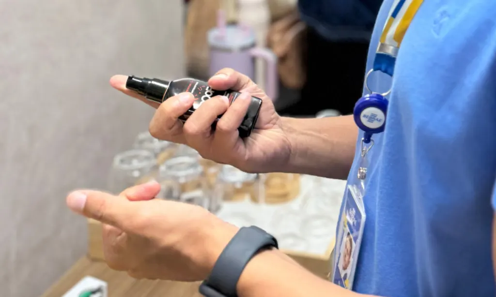
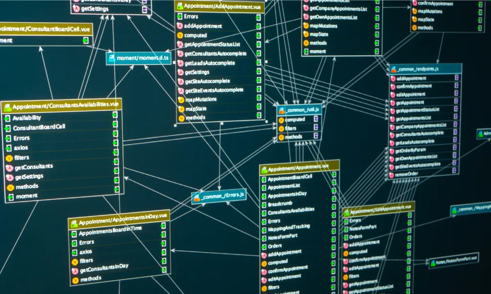
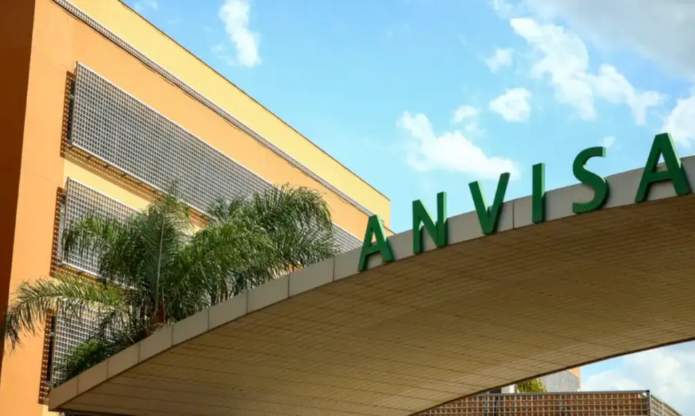
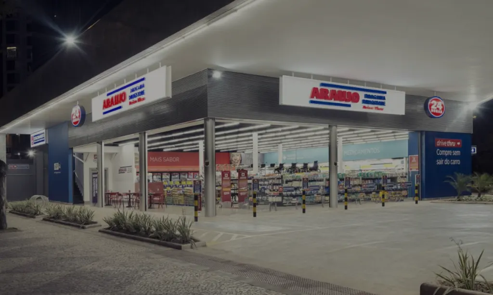

A pandemic need mobilized different sectors around a single solution: developing an alternative to hand sanitizer gel. Through NanoBrasil's coordination, UFMG, Anvisa and Drogarias Araújo came together at different stages that took POOF, a nanocopper-based antiseptic, from idea to market.
During the COVID-19 pandemic, alcohol gel became part of the prevention routine. But frequent use also brought some problems, such as dry and irritated skin. It was in this context that NanoBrasil identified an opportunity: using nanocopper, which has antimicrobial properties, to develop an alternative to alcohol gel.

“We realized there was a big problem with using alcohol gel because of its own characteristics. It's flammable, highly toxic and dries the skin. And we noticed that our nanocopper could handle that,” explains Oscar Geigner, NanoBrasil's commercial director.
The opportunity met a concrete demand when an investment fund approached NanoBrasil, interested in creating a disruptive alternative to alcohol gel and taking it to market. From then on, the challenge was no longer just technological: it was necessary to understand which product to develop, how to position it and which partners would be needed to make it viable.
The market before the product
Market analysis was one of the first stages of the project. Instead of going straight to formulation, NanoBrasil sought to understand how that solution could enter a market already dominated by alcohol gel.
The research showed that, although nanocopper made it possible to develop a different product, completely breaking with consumer habits could hinder its acceptance.
“So as not to break all the paradigms, and there were many, we gave the product a scent, a color and kept its gel composition,” says Oscar.

The decision is an example of how market analysis directly influenced development. For NanoBrasil, this initial diagnosis also prevents companies from investing in a project without first knowing its possibilities.
“That's why we always start R&D work by producing a technical and market report, so our client knows exactly where things stand. Not starting from scratch,” he says.
Besides pointing out product characteristics, this work seeks to map business possibilities. According to Oscar, the analysis serves to present the client with different possible routes for the same technology.

“In market terms, what result this can deliver and the path it needs to take for this product to succeed. So we deliver an absolutely complete piece of work, not just a technical one. Not just one path; we give 10 paths on average,” he explains.
When the idea meets science
With the direction defined, the next step was to turn the proposal into a formulation. NanoBrasil developed the formula and coordinated the participation of the Federal University of Minas Gerais (UFMG) in validating the antiseptic's microbiological efficacy.

The work moved quickly given the health emergency. In about six months, the formulation was developed, paving the way for the next stages.
A formulation needs to reach industry
With the solution formulated, the project still had to bridge the gap between the laboratory and large-scale production. NanoBrasil brought in a company to handle manufacturing and continued building the chain needed to take the product to market.
This reveals a central characteristic of the project: there was no single company responsible for every stage. With each new challenge, new players had to come on board.

That was the case with Anvisa. Production had to go through the regulatory process and, during the pandemic, the sense of urgency allowed some procedures to move faster.
“We were able to work with Anvisa to get it approved, which was easier at the time because of the urgency,” says Oscar.
The regulatory work was also part of a broader strategy. NanoBrasil was looking for ways for the solution to later advance toward the hospital market, which would require new permits and stages.
From industry to the consumer's hands
With development and production under way, the project reached the commercialization stage. Drogarias Araújo came on board as a partner to bring POOF to consumers.

The result was a chain that brought together different competencies around a single solution: GNB – the company created by the investment flow – brought the demand for the development; UFMG took part in the microbiological validation; the manufacturer made production possible; Anvisa was part of the regulatory process; and Drogarias Araújo made the connection with the market.
POOF reached the shelves as an antiseptic gel developed with nanocopper technology. According to the results obtained during development, the solution showed antimicrobial action and the ability to eliminate 99.9% of the viruses present on the hands, as well as efficacy against viruses related to COVID-19 and mpox.
The next step: taking the technology even further
The story of POOF shows that, between an identified need and a solution available on the market, there is a sequence of decisions that goes far beyond technological development.
In the project, NanoBrasil connected the competencies needed at each stage while using technical and market information to guide the possible paths.
This logic also opens new possibilities for POOF. With a base already developed and validated, the technology can serve as a starting point for new applications in products and markets, such as solutions for health, cleaning, paints and fabrics.
“The hospital market is the path we want to follow with POOF. The idea is to expand the application of this technology and turn this base into new solutions for healthcare,” says Oscar Geigner, NanoBrasil's commercial director.
More than a product developed to meet a pandemic need, POOF may be the starting point for a new series of applications. The technology that reached the market can now pave the way for new solutions.